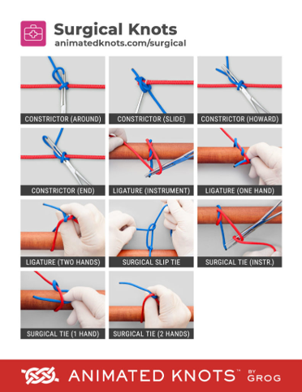
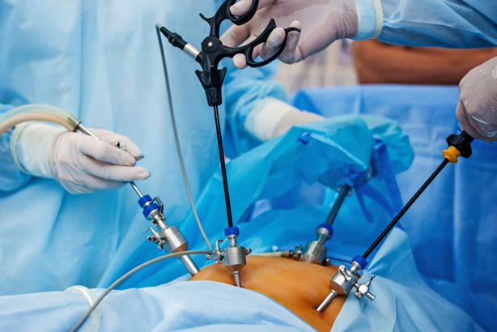
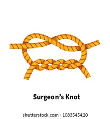
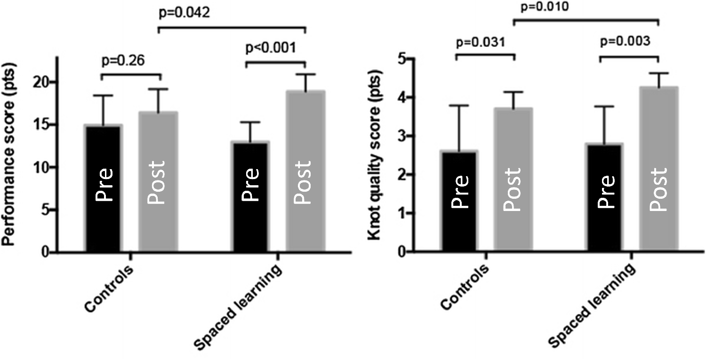

Distribution of Practice
Same total practice time. Very different results — depending on how you spread it out.
By the end of this lesson you will be able to…
- 1Define massed and distributed practice.
- 2State how distribution affects performance vs. learning — and why they diverge.
- 3Summarize the mechanisms behind the spacing effect.
- 4Weigh the practical costs of distributed practice in a clinical setting.
Imagine you’re teaching someone to tie surgical knots
You have 80 minutes total this week to teach four kinds of surgical knots. Same eighty minutes either way. What’s your intuition — how would you schedule them?

Go with your gut to continue — there’s no penalty for either.
Massed vs. distributed practice
The difference is about how practice is spread across time — not how much practice you do. Same total minutes, different spacing:
Distributed practice wins for learning
As a rule of thumb, shorter but more frequent sessions produce better retention than one long block of practice. The benefit shows up across skill types — continuous and discrete, open and closed.
Massed practice often makes you feel you learned more — because your performance climbs within the long session. That feeling is misleading.
Cramming a course into a few intense weeks can feel productive and even boost short-term performance — but the same material spread across a full semester is usually retained better. This is the performance-vs-learning distinction from Module 2, now as a scheduling choice.
Laparoscopic suturing: massed vs. spaced
Laparoscopic surgery training often happens in one full-day session for medical residents. Is that good for long-term retention? Boettcher et al. (2017) put it to the test.


Twenty medical students were randomly split into two groups — 10 in each:
3 hours, one day
180 minutes of training in a single block.
Three 40-min sessions
120 minutes total, with 20-minute breaks between sessions.
Notice: the spaced group practiced less total time (120 vs. 180 min). Predict the retention result:
Make a prediction to continue.
Boettcher, J., Klippgen, L., Mietzsch, S., Grotelüschen, R., Klinke, M., Reinshagen, K., & Boettcher, M. (2017). The spaced learning concept significantly improves training for laparoscopic suturing: A pilot randomized controlled study. Surgical Endoscopy, 32(1), 154–159. link.springer.com/article/10.1007/s00464-017-5650-6
Spaced won — with less total practice
The spaced-learning group improved more than the controls on both measures — despite practicing an hour less. Here are the actual data:

The control group barely improved from pre to post — their small change wasn’t statistically significant. The spaced group improved sharply, and by the post-test they clearly outscored the controls. Spacing drove a real gain where the massed-style schedule didn’t.
Here both groups improved — but the spaced group improved more, ending up significantly better at the post-test. So the spaced advantage showed up in the quality of the knots, not just the overall performance score.
On both measures, the spaced group ended up better than the controls — better learning, from less total practice time. Spacing didn’t just save an hour; it taught more per minute.
Boettcher, J., Klippgen, L., Mietzsch, S., Grotelüschen, R., Klinke, M., Reinshagen, K., & Boettcher, M. (2017). The spaced learning concept significantly improves training for laparoscopic suturing. Surgical Endoscopy, 32(1), 154–159. link.springer.com/article/10.1007/s00464-017-5650-6
Four mechanisms behind the spacing effect
No single reason fully explains it — several forces likely act together. Select each card to reveal how it works.
Three ways to distribute the same practice
The surgical study compared massed against one spaced schedule. But spacing isn’t all-or-nothing — you can distribute the same practice more or less aggressively. Does more spacing keep helping?
Back to juggling (the skill from the performance-curves lesson). Luz et al. (2022) taught the three-ball cascade to learners under three different schedules — each using the same total practice time, differing only in how it was spread out — then gave everyone a 24-hour retention test:
- AMassed: one 30-minute session, nonstop.
- BDistributed within a day: six 5-minute sessions, same day.
- CDistributed across days: three 10-minute sessions over three days.
Predict how they ranked. Drag the schedules from best learning at retention (top) to worst (bottom), then check. Tap two cards to swap, or use ↑/↓ on a focused card.
Rank all three and check to continue.
Luz, J. E. M., Santos, H. D., & Bonuzzi, G. M. G. (2022). Effects of the different distributed practice regimes on the learning of three-ball cascade juggling task. Brazilian Journal of Motor Behavior, 16(2), 153–161.
So why isn’t all practice distributed?
Distributed practice is better for learning — but it isn’t free. Before revealing common costs, think about your own setting:
In your field (PT, OT, dentistry…), what would make it hard to spread a patient’s or student’s practice across many short sessions instead of one long one?
Personal thinking prompt — not submitted or graded, saved on this device only.
A patient recovering hand function has 90 minutes of therapy time available this week. Based on the distribution principle, which schedule best supports long-term learning?
Answer to continue.
What you can now do
- 1Define massed vs. distributed practice — a difference of spacing, not amount.
- 2Explain that distributed practice usually produces better learning, even though massed can feel better and boost momentary performance.
- 3Name the mechanisms: consolidation, less fatigue, more effort, accurate self-appraisal.
- 4Weigh the real costs of distribution against its learning benefit.
We’ve covered how to space practice in time. Next: how much to vary what you practice — and why messier, more variable practice often teaches more.
Return to Canvas for the next lesson, Variability of Practice, when you’re ready.